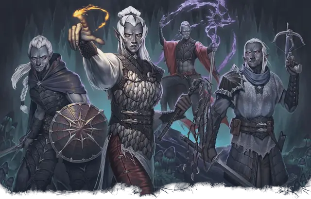

Дроу, посвящённый Лолс
Drow of Lolth
Средний Гуманоид (Эльф), Хаотичный Злой

Класс Защиты 15 Инициатива +2 (12)
Хиты 13 (3к8)
Скорость 30 футов
| мод | спас | ||
|---|---|---|---|
| СИЛ | 10 | +0 | +0 |
| ЛОВ | 14 | +2 | +2 |
| ТЕЛ | 10 | +0 | +0 |
| мод | спас | ||
|---|---|---|---|
| ИНТ | 11 | +0 | +0 |
| МДР | 11 | +0 | +0 |
| ХАР | 12 | +1 | +1 |
Чувства Тёмное зрение 120 футов, пассивное Восприятие 12
Языки Общий, Подземный, Эльфийский
Опасность 1/4 (50 опыта; БВ +2)
Особенности
Наследие фей. Дроу совершает с Преимуществом спасброски на избежание и окончание состояния Очарованный, а магия не может его усыпить.
Чувствительность к солнцу. Находясь на солнечном свету, дроу совершает броски атаки с Помехой.
Действия
Рапира. Бросок рукопашной атаки: +4, досягаемость 5 фт. Попадание: 6 (1к8 + 2) Колющего урона.
Одноручный арбалет дроу. Бросок дальнобойной атаки: +4, дистанция 30/120 фт. Попадание: 4 (1к4 + 2) Колющего урона, и цель подвергается следующему эффекту. Спасбросок Телосложения: Сл 12. Провал: Цель становится Отравленной на 1 час. Провал на 5 и больше: Цель также Бессознательна, пока Отравлена таким образом. Она пробуждается, если получает урон или другое существо в пределах 5 футов от неё действием разбудит её.
Сотворение заклинаний. Дроу, посвящённый Лолс сотворяет одно из следующих заклинаний, не нуждаясь в Материальных компонентах (заклинательная характеристика — Харизма, Сл спасброска заклинаний 11):
Неограниченно: Пляшущие огоньки
1/день: Огонь фей
Бонус мастерства +2
Среда обитания Город, Подземье
Сокровища Любые
Дроу, посвящённые Лолс
Эльфы, служащие Паучьей Королеве
По всем уголкам обширных лабиринтов Подземья в городах вроде Мензоберранзана многие дроу поклоняются и посвящают себя Лолc, Паучьей Королеве. Изгнанные с поверхности тысячелетия назад, эти дроу теперь считают Подземье своим истинным домом. Их коварные замыслы оборачиваются набегами на поверхность, междоусобными интригами и подготовкой к последней, решительной войне.
Дроу, посвящённые Лолс защищают города в Подземье и совершают набеги на поверхность во имя Паучьей Королевы.